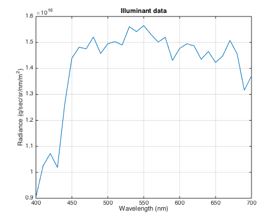
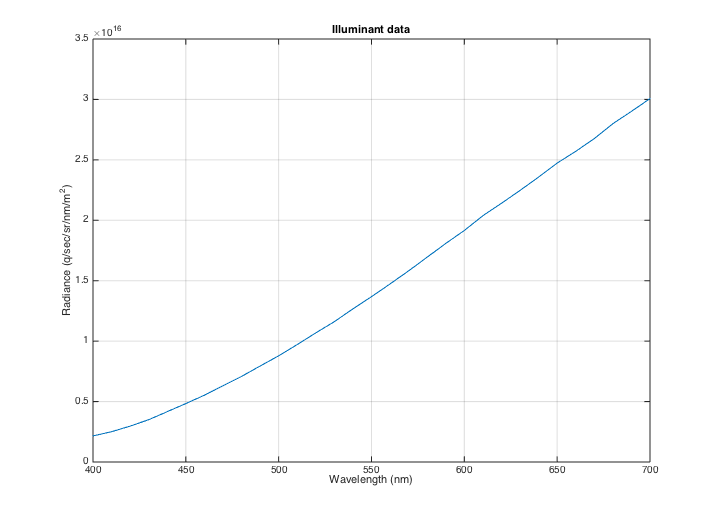
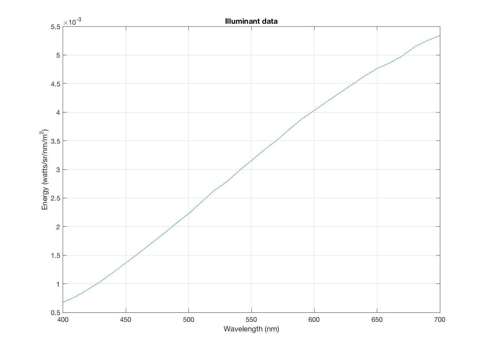
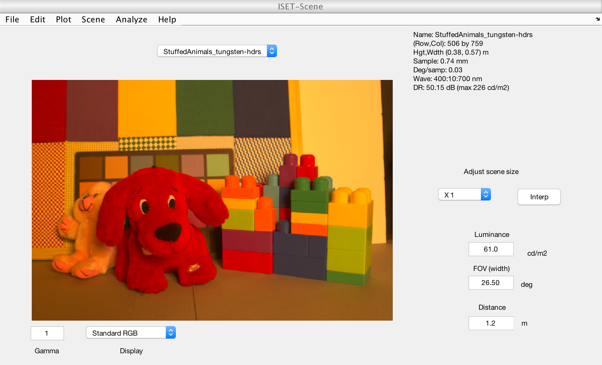
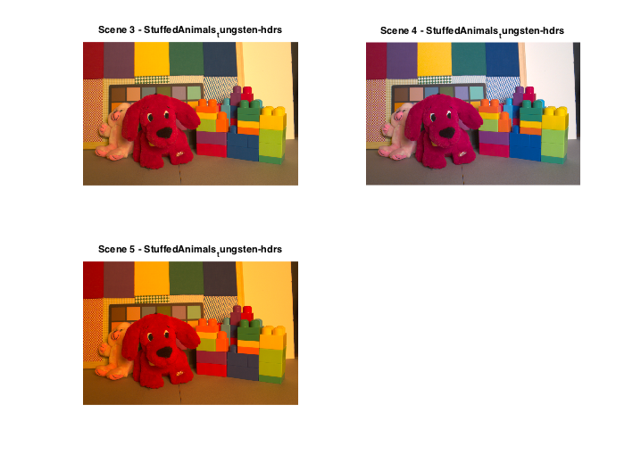

t_imageMultiview
Illustrate how to display multiple RGB images from one of the current scene/oi/sensor/vci.
Copyright Imageval LLC, 2013
Contents
Initialize
ieInit;
Interactive mode?
Set to true to see interactive feature. Default false so we can auto-run all tutorials.
interactiveMode = false;
To start debugging I ran s_imageIlluminantCorrection
This provides windows with multiple examples It takes a little while.
s_sceneChangeIlluminant
ans =
wave: [31x1 double]
photons: [31x1 single]
comment: []
ans =
wave: [31x1 double]
photons: [31x1 single]
comment: 'Tungsten illuminant'
Reading multispectral data with mcCOEF.
Saved using svd method
ans =
wave: [31x1 double]
energy: [31x1 single]
comment: 'tungsten illuminant in lab'
    Show several objects in a single window
This example shows several of the scene images. No user interaction required.
objType = 'scene';
whichObj = [3 4 5];
imageMultiview(objType,whichObj,true);
 This one allows you to select which ones you want to compare
They come up in separate windows.
if (interactiveMode) imageMultiview('scene'); end
To run it in another window, when you have images there, use ...
sensorWindow; imageMultiview('sensor',[ 1 4]); imageMultiview('vci',[1 4]);